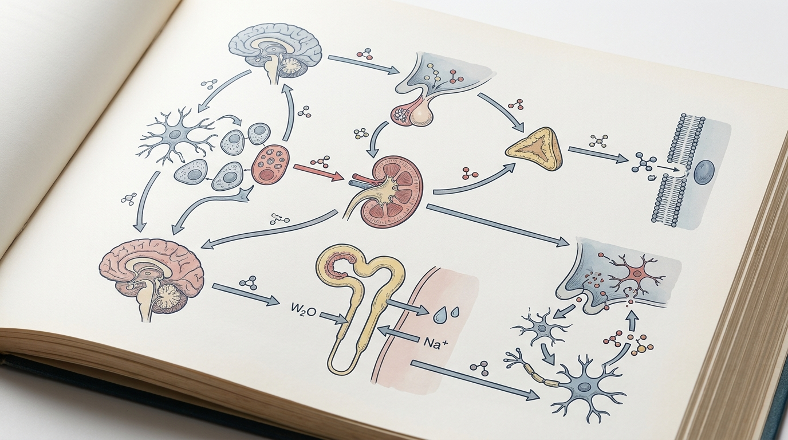

반복되는 스트레스성 폭식과 다리 부종, 원인 체질부터 짚어 대사 균형 잡는 법
만성 좌식 스트레스는 시상하부-뇌하수체-부신(HPA)축의 코르티솔 분비 리듬을 왜곡시켜 나트륨-수분 저류에 의한 부종을 유발하는 동시에, 중뇌변연계 도파민 보상회로를 교란해 포만감 신호를 약화시킨다. 이로 인해 식탐 조절 실패와 스트레스성 폭식, 기초대사량 저하가 동시다발적으로 진행되는 경향을 나타낸다.
1. 체질 및 생애주기별 대사율 저하의 의학적 원인 분석
수험생과 사무직 직장인에게서 흔히 관찰되는 하지 부종 및 얼굴 부기를 동반한 체형 변화는 단순한 체지방 축적 문제가 아니라, 장기간의 좌식 스트레스 노출이 신경내분비계에 미치는 병태생리학적 결과로 이해할 수 있다. 시험 준비나 반복되는 업무 압박과 같은 만성 스트레스 자극은 시상하부 실방핵을 경유하여 뇌하수체 전엽의 부신피질자극호르몬(ACTH) 분비를 촉진하고, 이는 부신피질에서의 코르티솔 과분비로 이어지는 HPA축 활성화 경로를 형성한다. 문제는 이러한 스트레스 반응이 단기간에 그치지 않고 만성적으로 지속될 경우, 코르티솔 분비의 일중 리듬 자체가 편평화되거나 조절 능력이 손상되는 방향으로 진행될 수 있다는 점이다.
코르티솔은 신장의 원위세뇨관과 집합관에서 나트륨 재흡수를 증가시키는 미네랄코르티코이드 유사 작용을 나타내는데, 만성적으로 상승된 코르티솔 수치는 결과적으로 체내 수분 저류를 증가시켜 다리와 안면의 부종 양상을 심화시키는 방향으로 작용한다. 동시에 지속적인 코르티솔 노출은 교감신경계의 조절 균형을 무너뜨려 갈색지방조직에서의 열생성(Thermogenesis) 반응을 둔화시키고, 이는 기초대사량(BMR) 감소로 직결된다. 좌식 생활이 습관화된 수험생·직장인 집단에서는 신체 활동량 저하와 이러한 대사적 둔화가 중첩되면서, 동일한 식이 섭취량에도 불구하고 체지방 축적과 부종형 체형 변화가 더욱 두드러지게 나타나는 경향을 보인다.
한의학적 관점에서는 이러한 병리 양상을 비허습담(脾虛濕痰) 변증으로 설명한다. 비장의 운화 기능이 저하되면 수습 대사가 정체되어 담음(痰飮)이 체내에 축적되고, 이는 서양의학적으로 관찰되는 나트륨-수분 저류 및 세포외액 증가 소견과 상당 부분 궤를 함께한다. 즉 좌식·고스트레스 체질은 단순히 심리적 긴장 상태에 그치지 않고, 실제 수분 대사와 에너지 대사 양쪽에서 구조적 불균형이 동반되는 병태로 접근할 필요가 있다.
2. 단순 감량이 아닌 체질별 대사 불균형을 바로잡는 바디올핏 맞춤 한약 치료 원리

만성 스트레스로 인한 코르티솔 상승은 시상하부의 포만감 신호 전달 체계에도 직접적인 영향을 미친다. 코르티솔은 중뇌변연계 도파민 보상회로의 활성 패턴을 변형시켜, 고지방·고당분 식품에 대한 보상 민감도를 상대적으로 높이는 방향으로 작용하는 것으로 알려져 있다. 이 과정에서 시상하부의 렙틴 및 그렐린 신호 전달 균형이 흐트러지면서 정상적인 포만감 인지가 지연되고, 결과적으로 식탐 조절 실패와 폭식-절식의 반복적 순환 패턴이 형성되는 악순환 구조가 만들어진다.
단순 열량 제한이나 일회성 다이어트 방식은 이러한 신경내분비학적 근본 원인을 다루지 않기 때문에, 코르티솔 매개 대사 저하 상태에서는 감량 효과가 제한적이거나 요요로 이어지기 쉬운 구조적 한계를 갖는다. 이에 대해 체질별 비허습담 변증에 기반한 다이어트 한약 처방은 수습 정체를 해소하고 비장의 운화 기능을 강화하여 수분 대사 불균형을 교정하는 동시에, 열생성 반응을 보조하여 기초대사량 회복을 도모하는 접근을 취한다.
만성 스트레스에 의한 HPA축 조절 장애 및 시상하부-변연계 회로의 재구성 기전은 인용된 학술 연구[1]를 통해 과학적으로 설명됩니다. 바디올한의원에서는 이러한 객관적 기전에 근거하여, 임상에서 다이어트 한약 처방을 체계적으로 적용하고 있습니다.
| 구분 | 일반 감량방식 | 체질 맞춤 대사교정 치료 |
|---|---|---|
| 접근 초점 | 열량 섭취 제한 및 단기 체중 변화 중심 | 비허습담 변증 기반 수분·에너지 대사 불균형 교정 |
| 스트레스 반응 관리 | 별도 개입 없이 식이 조절에만 집중 | 대표원장 1:1 행동수정 코칭 병행으로 스트레스 반응 재훈련 도모 |
| 부종 관리 방식 | 일시적 수분 배출 유도 위주 | 비장 운화 기능 강화를 통한 근본적 수습 대사 개선 |
| 기초대사량 관리 | 고려되지 않거나 부수적 요소로 취급 | 열생성 반응 보조를 통한 기초대사량 회복 접근 |
| 재발 관리 관점 | 중단 시 원상 복귀 경향 | 체질 개선 및 생활습관 교정을 통한 지속 가능성 확보 지향 |
3. 만성 스트레스성 부종 비만과 체질 교정 관련 학술 임상 논문 분석
만성 스트레스와 대사 이상의 상관관계에 관한 학술적 근거는 지속적으로 축적되어 왔다. 관련 종설 연구에 따르면 만성 스트레스는 HPA축의 만성적 기저 과분비, 스트레스 반응의 감작화, 혹은 부신 기능 저하 등 다양한 형태의 조절 장애로 이어질 수 있으며, 이러한 신경내분비학적 부적응은 시상하부 실방핵-변연계 회로의 만성적 재구성을 동반하는 것으로 보고된다[1]. 이는 수험생·직장인의 지속적 좌식 스트레스가 단순 심리적 문제를 넘어, 실제 시상하부-뇌하수체-부신 축의 구조적 반응 회로 변화를 통해 나트륨-수분 저류 및 식탐 조절 실패, 교감신경 부조화를 유발할 수 있다는 병태생리학적 근거를 제공한다는 점에서 임상적 의의를 갖는다.
또 다른 연구에서는 만성 스트레스 노출 시 일중 코르티솔 곡선의 편평화 및 기상 시 코르티솔 반응 저하가 인슐린 저항성 및 대사 장애와 긴밀히 연관됨이 보고되었다[2]. 이는 수험생·직장인의 만성 좌식 스트레스가 HPA축 조율 장애를 통해 지방 축적 및 부종형 체형 변화를 유발하는 병태생리학적 기전을 지지하는 결과로, 단순 열량 제한 다이어트약만으로는 해소되지 않는 코르티솔 매개 대사 저하 문제를 시사한다. 이러한 학술적 근거들은 체질별 비허습담 변증에 기반한 다이어트 한약이 수분 대사 불균형과 기초대사량 저하를 함께 교정하는 접근법의 타당성을 뒷받침하며, 대표원장 1:1 밀착 행동수정 코칭이 스트레스 반응 재훈련 및 식이 타이밍 교정을 병행함으로써 코르티솔 매개 대사 장애의 근본 원인에 접근하는 보존적 치료 선택지 중 하나로서 학술적 정합성을 갖춘다는 점을 시사한다.
4. 체질 맞춤 감량 및 지속 가능한 대사 유지 솔루션
바디올핏 다이어트 프로그램(대사교정 프로토콜)은 좌식·고스트레스 체질의 부종형 비만 및 식탐 조절 실패 문제를 단일 처방이 아닌 다각적 접근으로 다룬다. 먼저 비허습담 변증에 기반한 체질별 한약 처방을 통해 수습 정체를 해소하고 비장 운화 기능을 강화함으로써 세포외액 저류 및 부종 양상 개선을 도모하며, 동시에 열생성 반응 보조를 통한 기초대사량 회복 경향을 지향한다.
이와 병행하여 대표원장 1:1 밀착 행동수정 코칭은 만성화된 스트레스 반응 패턴을 재훈련하는 데 초점을 맞춘다. 구체적으로는 식이 타이밍 교정을 통해 코르티솔 리듬과 식사 시간대의 부조화를 개선하고, 좌식 시간이 긴 생활 패턴 내에서도 실천 가능한 활동 패턴 재구성을 안내함으로써 단순 증상 완화가 아닌 부종 및 식탐 조절 실패를 유발하는 행동적·생리적 근본 요인에 함께 접근하는 방식을 취한다.
이러한 병행 접근은 다이어트 한약 처방과 행동수정 요법을 별개로 다루기보다, 체질별 대사 불균형 교정과 스트레스 반응 회로 재훈련이 상호 보완적으로 작용하도록 설계된 것으로, 좌식·고스트레스 환경에 노출된 수험생 및 직장인 집단의 부종형 비만 관리에 있어 안전하고 효과적인 한의학적 대사 보존 치료 선택지 중 하나로 학술적 고려가 가능하다.
💡 Q. 스트레스성 부종 비만은 체질 개선만으로 관리가 가능한가?
체질 개선 한약 처방은 수분 대사 및 기초대사량 관련 불균형을 교정하는 데 도움을 줄 수 있는 보존적 접근으로 고려되나, 만성 스트레스로 인한 HPA축 및 도파민 보상회로 이상은 행동적 요인과도 밀접하게 연관되어 있다. 따라서 한약 치료와 더불어 스트레스 반응 재훈련, 식이 타이밍 교정 등 1:1 행동수정 요법을 병행하는 접근이 체질별 대사 불균형과 행동 패턴 양쪽을 함께 다루는 데 있어 학술적으로 더 정합성을 갖는 것으로 이해된다.
참고문헌
- Herman JP, et al. (2016), 'Regulation of the Hypothalamic‐Pituitary‐Adrenocortical Stress Response', Comprehensive Physiology. DOI: 10.1002/j.2040-4603.2016.tb00694.x
- Joseph JJ, et al. (2016), 'Cortisol dysregulation: the bidirectional link between stress, depression, and type 2 diabetes mellitus', Annals of the New York Academy of Sciences. DOI: 10.1111/nyas.13217